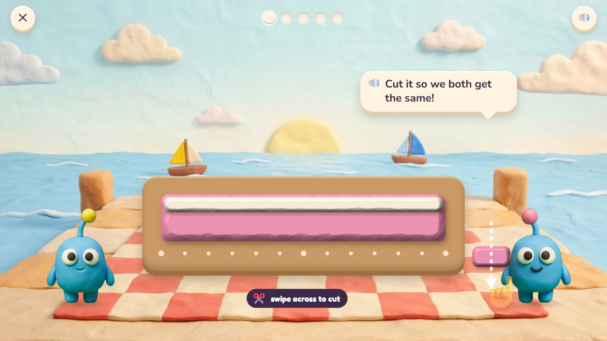
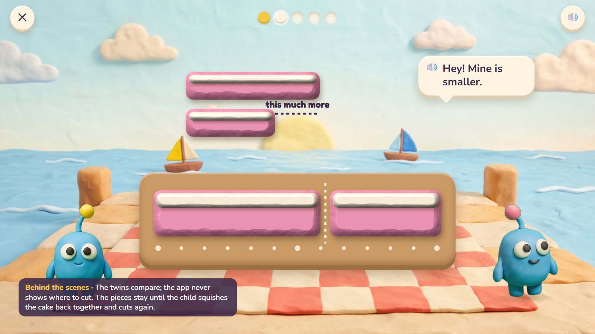
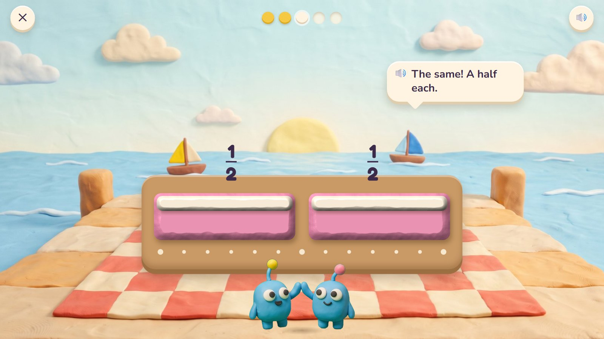
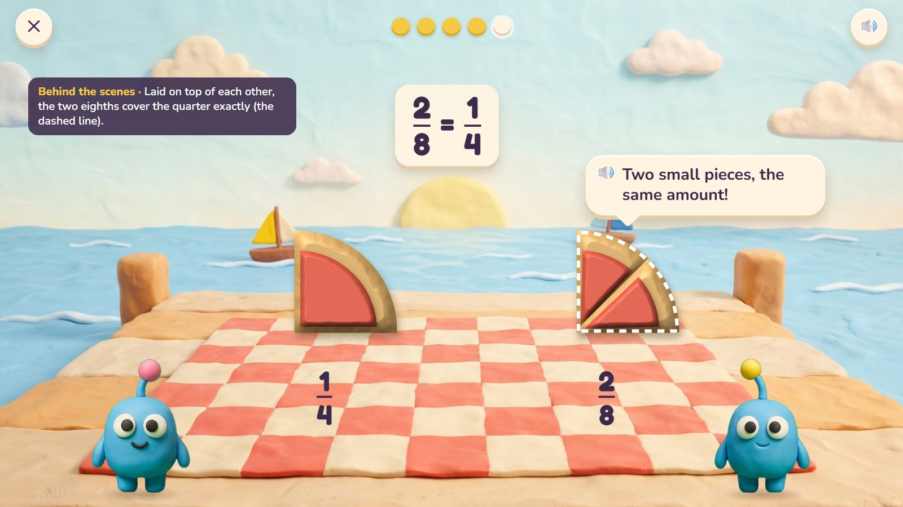
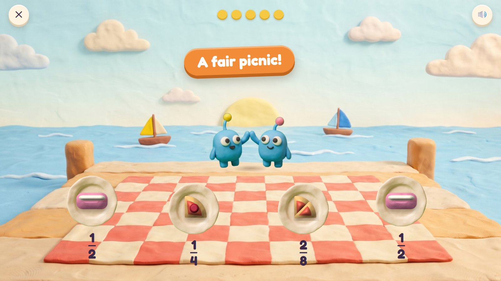

Fair Slices
Bim and Bam are twins, and twins check who got more. Mumba bakes clay cakes and pies for the picnic, and the child cuts them with a swipe of the finger. If the pieces are not the same size, the twins notice: they hold their pieces side by side. Then the child names each share: one half, one quarter, two eighths.
Grades 2–5 · ages 7–10 host: Bim and Bam move: swipe to cut, squish back together
The maths: Equal parts; halves, thirds, quarters and eighths; naming a share (1/4); a fraction of an amount (1/4 of 12); equal shares that look different (2/8 = 1/4). One activity is five rounds, about two minutes. With one finger: drag a cut line, or tap two dots to cut between them.
🎉 The fun
The swipe of a cutting wire through clay; twins who notice everything; a picnic where everyone is happy.
🎥 The view
Fixed: the picnic blanket from a little above.
🎆 The finale
Everyone at the picnic gets their plate, and each plate shows its fraction (3 seconds).
Six moments

1Share it fairly
A long clay cake on the board, with a row of dots along the front as a guide. The see-through hand shows a swipe on a scrap of clay, not on the cake.
🔊 Cut it so we both get the same!
The dots are the same for every cake, like a ruler: a help for aiming, not the answer.

2A wrong try
The cut is too far along. The twins hold their pieces side by side: one is longer.
🔊 Hey! Mine is smaller.
The twins compare; the app never shows where to cut. The pieces stay until the child squishes the cake back together and cuts again.

3A half each
Squished back and cut in the middle: the same. Each piece is named: one half.
🔊 The same! A half each.
Pieces count as equal within about 5% (the twins don't notice less), measured by the app.

4Quarters and cherries
A round pie with 12 cherries for four friends: two cuts through the middle make four equal pieces with 3 cherries each.
🔊 Four friends, twelve cherries. How many each?
A quarter of 12 is 3: a fraction of an amount, seen on the pie.

5Fair?
Bim has two eighths, Bam has one quarter. Laid on top of each other, they cover exactly the same.
🔊 Two small pieces, the same amount!
Equal shares can look different: 2/8 = 1/4.

6A fair picnic
Everyone has a plate, and each plate shows its share.
🔊 A fair picnic!
Mock-ups: Gemini's clay pictures (scenes, friends, props) with the maths drawn by code in the same clay look, the way the app would draw it, so every count and size is exact.
What is asked, for one age
- A long cake for 2 (halves)
- A round pie for 4 (quarters)
- A long cake for 3 (thirds; every 4 dots)
- 12 cherries on a pie for 4: how many each? (3)
- Two eighths or one quarter: fair? (yes)
One activity card. The same activity serves other ages with other numbers:
| Age | What changes |
|---|---|
| 7 | Halves and quarters; sharing between 2 and 4; naming "one half". |
| 8 | Thirds, sixths and eighths; a fraction of an amount; writing 1/4. |
| 9–10 | Equal shares that look different (2/8 = 1/4); comparing (1/3 or 1/4?); more than one piece (3/4). |
Wrong answers we expect, and what happens
| Mistake | Looks like | What happens (never red, never "wrong") |
|---|---|---|
| Unequal "halves" | a 60/40 cut | the twins compare their pieces side by side |
| Counting pieces, not size | "I have 2 pieces, you have 1" | the pieces are laid on top of each other |
| Bigger number, bigger piece | thinks 1/4 is more than 1/3 | "Would you rather share with 3 friends or 4?" and both are cut |
| Sharing by the wrong number | 12 cherries for 4: says 4 each | the cherries are counted on each piece |
What it needs
- The picnic scene, drawn once
- Cakes, pies, cherries and cuts drawn by code (exact sizes)
- The plates (cut-out)
- The twins and two friends
- Voice: fraction names, "the same", "more", tips
Test robot: Reads how many share, cuts at the exact places (with a small wobble inside the allowed band) and checks the pieces are equal by area. Once it cuts unequally, to check the twins.
One question
← Back to Clay Bay · Poke Pals · Pull-a-Shape · Critter Maker · Seesaw Twins · Parade Squares · Fair Slices · Zoom Dig